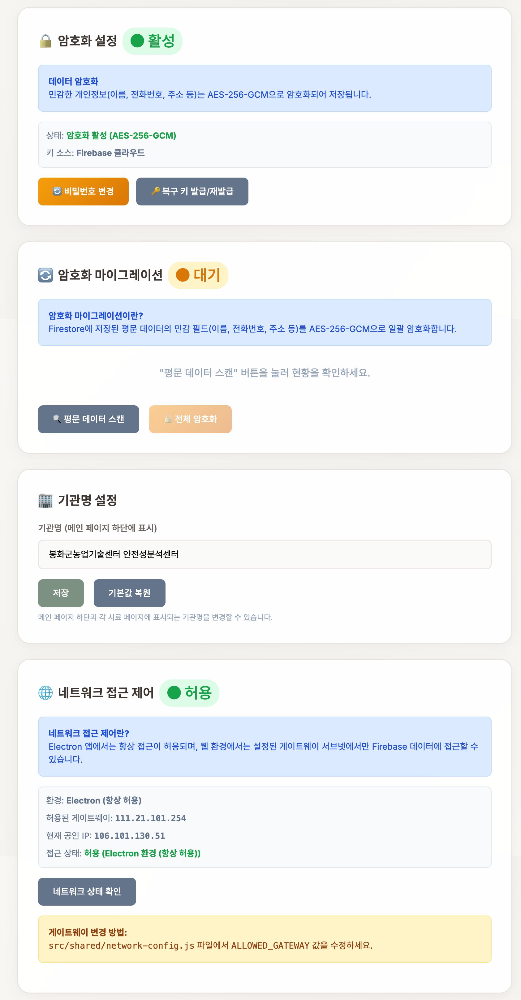
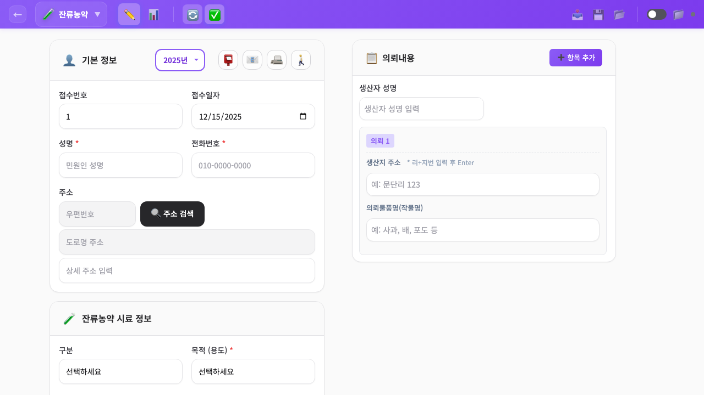
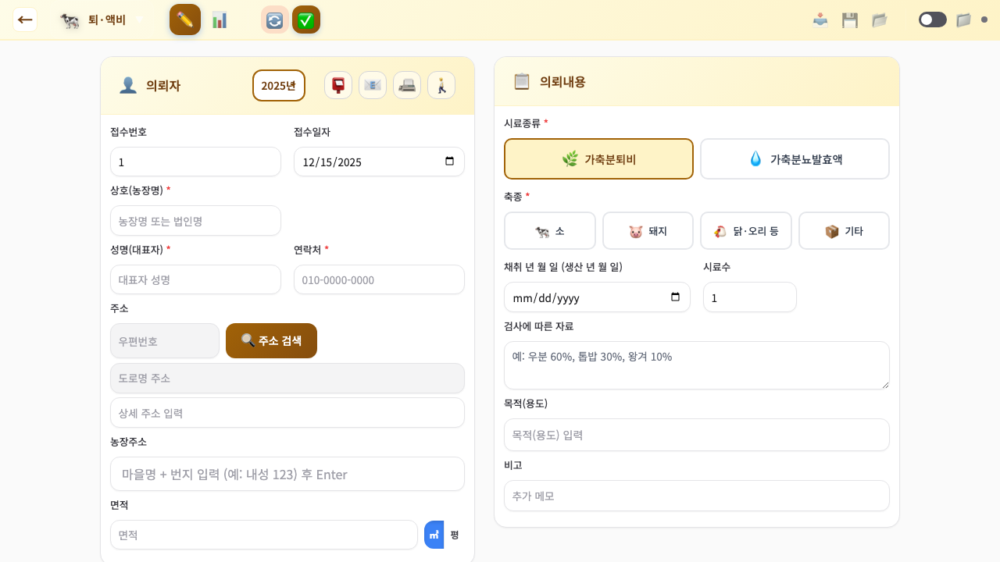
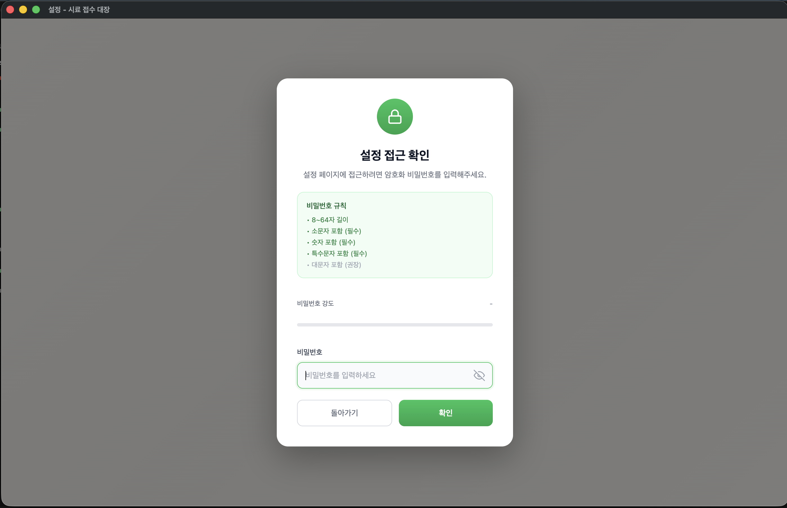
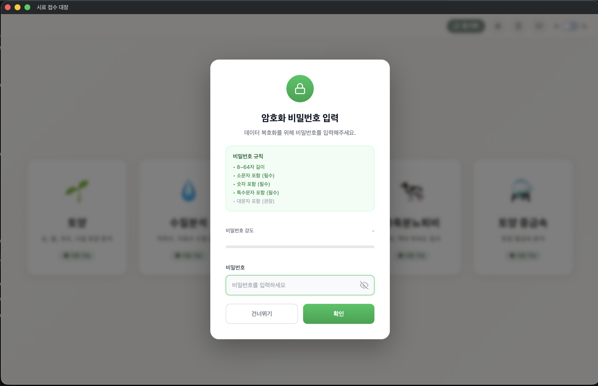

Smart Agriculture Solution
시료 접수 대장
디지털 전환 가이드
농업기술센터의 안전성분석 업무를 위한
오프라인 기반 스마트 관리 시스템

01
시스템 핵심 가치
Introduction종이 기반의 업무 처리를 전자화하여 시료 접수부터 조회, 보관, 분석까지 전 과정을 통합 관리합니다.
오프라인 우선 (Offline-First)
인터넷이 불안정한 환경에서도 100% 작동합니다. 실시간 로컬 저장으로 데이터 손실 걱정이 없습니다.
클라우드 연동 (Hybrid Sync)
Firebase 기반 동기화로 여러 PC에서 데이터를 실시간 공유하고 원격 백업을 지원합니다.
강력한 개인정보 보호
AES-256-GCM 방식의 전문 암호화 기술을 적용하여 농업인 정보를 안전하게 보호합니다.
엑셀 및 라벨 완벽 지원
기존 엑셀 데이터의 대량 등록과 시료 식별을 위한 주소 라벨 인쇄 기능을 즉시 제공합니다.

기관별 맞춤 설정 및 네트워크 접근 제어 화면
02
5대 핵심 시료 분석 모듈
Modules
토양 분석
토양 시비 처방 관리
논, 밭, 과수원별 토양 정보 등록 및 시비 처방 결과를 체계적으로 추적합니다.

잔류 농약
농산물 안전성 검사
출하 전 농산물의 잔류 농약 성분을 기록하고 부적합 내역을 즉시 조회합니다.

퇴비 / 액비
가축분뇨 부숙도 관리
가축분뇨 퇴비 및 액비의 부숙도 검사 일련의 과정을 디지털로 기록합니다.

03
데이터 보안 및 기술 지원
Security & Support금융권 수준의 암호화
비밀번호를 모르는 사람은 외부에서 파일을 열어도 내용을 볼 수 없습니다. 복구 키 시스템으로 비밀번호 분실에도 대비합니다.


도입 문의 및 배포
봉화군 농업기술센터에서 직접 개발하고 배포하는 시스템입니다. 타 센터 도입 시 GitHub를 통한 소스 코드 배포 및 지원이 가능합니다.
농업 행정의 디지털 전환, 지금 시작하세요.
문의: 봉화군 농업기술센터 안전성분석센터
전화: (054) 679-68xx
Web: bhcenter.github.io